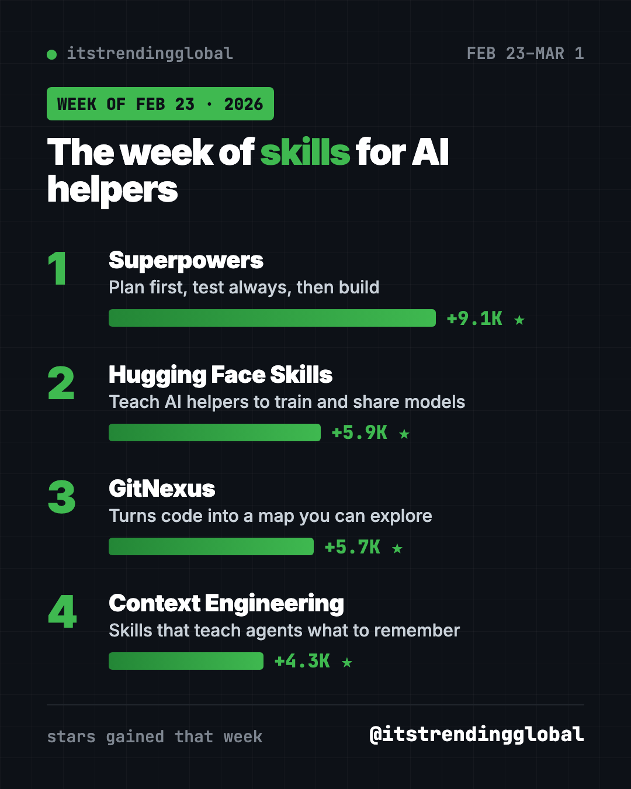
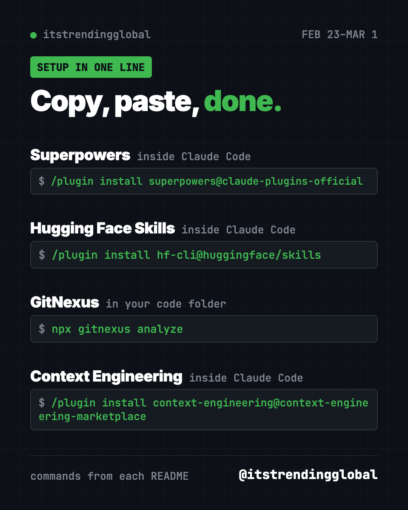
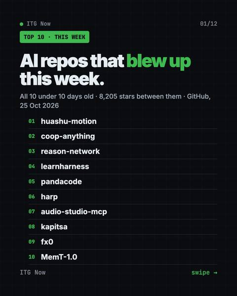

Home › Tools and repos › GitHub trending this week
Fastest-Growing GitHub Repos: Week of Feb 23, 2026
- Published 15 Oct 2026
- Updated 16 Oct 2026
- 6 min read
- By the ITG Now team
In this guide (8)
- Key takeaways
- Fastest-growing GitHub repos week of February 23, 2026 compared
- 1. Superpowers: the habit that keeps winning
- 2. Hugging Face Skills: your AI helper meets the model library
- 3. GitNexus: a map of your code
- 4. Agent Skills for Context Engineering: teach agents what to keep in mind
- Which one should you try first?
- FAQ
The fastest-growing GitHub repos week of February 23, 2026 had one clear theme: skills for AI helpers. Superpowers led again, followed by Hugging Face Skills, GitNexus and a skill pack about context engineering.
What is a skill? It is a folder of instructions an AI helper reads when it needs to do a certain job, a bit like a recipe card. Our data lists only four repos this week, so each one gets a little more room.
Key takeaways
- Superpowers led with about 9,100 new stars, its fourth top-five week in our 2026 lists.
- Hugging Face Skills teaches AI helpers to find models, build datasets and run training jobs.
- GitNexus turns a codebase into a map that AI helpers and people can explore.
- Agent Skills for Context Engineering teaches AI agents how to manage what they keep in mind.
- Three of the four install with a single command inside Claude Code.

Fastest-growing GitHub repos week of February 23, 2026 compared
| Rank | Repo | Stars gained | What it teaches or does | License |
|---|---|---|---|---|
| 1 | Superpowers | +9.1K | Plan, test, then build | MIT |
| 2 | Hugging Face Skills | +5.9K | Work with AI models and datasets | Apache-2.0 |
| 3 | GitNexus | +5.7K | Maps code into a knowledge graph | PolyForm Noncommercial |
| 4 | Context Engineering | +4.3K | Manage an agent's memory and focus | MIT |
Gains cover February 23 to March 1, 2026. Totals were checked on GitHub on October 16, 2026.
💡 Tip: Lines that start with
/pluginare typed inside Claude Code, not in your normal terminal. Open Claude Code first, then paste them in its chat box.
1. Superpowers: the habit that keeps winning
Stars: +9.1K this week · about 300K total today
What it is: Superpowers changes how your AI coding helper behaves. Instead of jumping straight into code, it asks what you are really after. Then it writes a short design, splits the work into small tasks, and checks each one with tests. The skills switch on by themselves, so you don't have to remember any commands.
Who it's for: Anyone who has watched an AI helper confidently build the wrong thing.
One everyday use: Ask it to build a birthday reminder page and answer its questions first.
Install it: Inside Claude Code, paste this:
/plugin install superpowers@claude-plugins-official
Codex users can add it from the Plugins sidebar in the Codex app.
Use Superpowers to plan and build a simple birthday reminder page. Ask me questions before you start.
See Superpowers on GitHub · Read our full Superpowers guide
2. Hugging Face Skills: your AI helper meets the model library
Stars: +5.9K this week · about 11K total today
What it is: Hugging Face is a huge public library of free AI models and datasets. These skills teach your AI helper how to use it: search for models, manage datasets, train models and check how good they are. The README suggests starting with one skill called hf-cli.
Who it's for: Students and builders who want to try open AI models without learning every command.
One everyday use: Ask your AI helper to find a small free model that turns speech into text.
Install it: Inside Claude Code, paste these two lines:
/plugin marketplace add huggingface/skills
/plugin install hf-cli@huggingface/skills
It also works with Codex, Gemini CLI and Cursor.
Use the hf-cli skill to find three small free speech-to-text models on Hugging Face and compare them for me.
See Hugging Face Skills on GitHub

3. GitNexus: a map of your code
Stars: +5.7K this week · about 48K total today
What it is: GitNexus reads a whole codebase and builds a knowledge graph. That is a map of how every piece connects to every other piece. AI helpers use this map so they stop breaking things they did not know were linked. There is also a web version that shows the map and lets you chat with it in your browser.
Who it's for: Developers working on big projects, and curious people who want to see how a project is built.
One everyday use: Ask "what breaks if I change the login page?" before you change it.
Install it: In your project folder, copy and paste this:
npx gitnexus analyze
npx gitnexus setup
The first line builds the map. The second connects it to helpers like Claude Code, Cursor and Codex.
Run GitNexus on this project and tell me which files depend on the login page.
⚠️ Heads up: GitNexus uses the PolyForm Noncommercial license. It is free for personal and other non-commercial use. Check the license before using it for paid work.
4. Agent Skills for Context Engineering: teach agents what to keep in mind
Stars: +4.3K this week · about 18K total today
What it is: An AI model can only keep so much in mind at once. Context engineering is the craft of choosing what goes in. This collection of skills teaches AI helpers to compress long sessions, spot when they are getting confused, and plan memory. The README says research papers have cited it.
Who it's for: People building their own AI agents, and power users of Claude Code.
One everyday use: Help your AI helper stay on track during a long, messy work session.
Install it: Inside Claude Code, paste these two lines:
/plugin marketplace add muratcankoylan/Agent-Skills-for-Context-Engineering
/plugin install context-engineering@context-engineering-marketplace
Use the context-engineering skills to review how my agent handles long chats and suggest three fixes.
See Agent Skills for Context Engineering on GitHub
Which one should you try first?
- You use Claude Code or Codex every day: install Superpowers first.
- You want to play with open AI models: add Hugging Face Skills.
- You work on a big codebase: try GitNexus (for non-commercial use).
- You build your own agents: read the Context Engineering skills.
FAQ
What were the fastest-growing GitHub repos the week of February 23, 2026?
Superpowers, Hugging Face Skills, GitNexus and Agent Skills for Context Engineering gained the most stars from February 23 to March 1.
What is an AI skill?
A skill is a folder with instructions and sometimes scripts. Your AI helper reads it when the job matches.
Can I use GitNexus at work?
Its license only allows non-commercial use for free. Read the PolyForm Noncommercial terms or contact the author for paid work.
Do these skills work outside Claude Code?
Mostly yes. Superpowers and Hugging Face Skills list Codex, Gemini CLI and Cursor, among others.
See the best GitHub repos of February 2026 and February 2026 in AI. The weeks around this one: February 16 and March 2.
Keep reading

AI Repos That Blew Up This Week: 10 New Picks (Oct 2026)
AI repos that blew up this week: 10 new GitHub projects under 10 days old, from launch videos made by AI to co-op mods for solo games, with the catch for each.

Trending GitHub Repos October 2026: The Top 5 So Far
The trending GitHub repos of October 2026 so far: a free Photoshop-style editor, an AI art studio, a big AI model for gaming PCs and more, explained.

Trending GitHub Repos This Week, Oct 5 2026: The Top 5
Trending GitHub repos this week Oct 5 2026: Matt Pocock's skills, the openGym workout tracker, e2e testing, HyperFrames video and claude-mem memory.